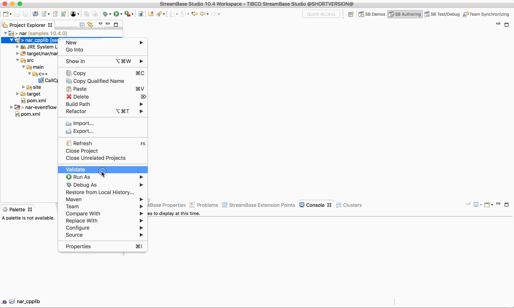
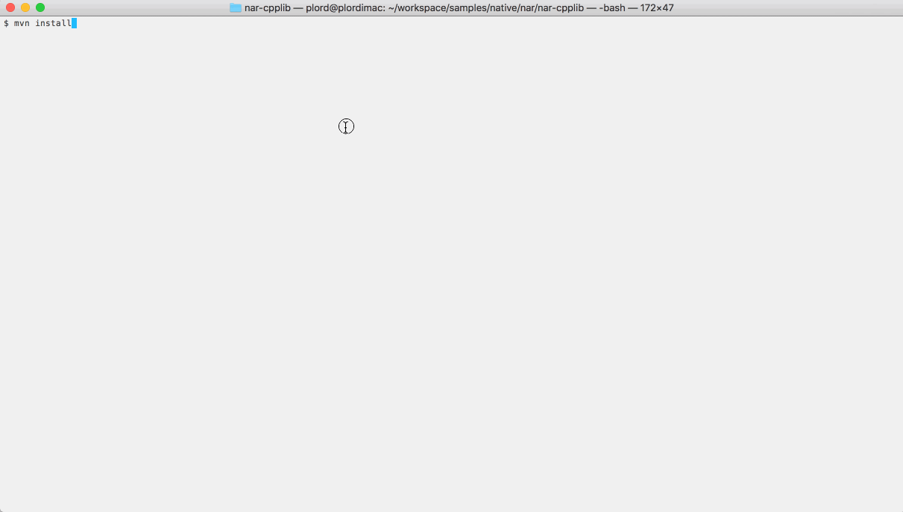

Native : NAR
This sample describes how to build a maven Native ARchive files (.nar) from C++ source. The resulting archive can then be used in a downstream EventFlow fragment.
C++ Source
The sample C++ source code provides functions to manipulate a static int :
#include "jni.h"
#include "com_tibco_ep_samples_nativelibrary_narcpplib_NarSystem.h"
extern "C" {
static int ivalue = 0;
JNIEXPORT jint JNICALL Java_com_tibco_ep_samples_nativelibrary_narcpplib_CallCpp_setCppInt(JNIEnv *env, jclass clazz, jint i)
{
int oldval = ivalue;
ivalue = i;
return oldval;
}
JNIEXPORT jint JNICALL Java_com_tibco_ep_samples_nativelibrary_narcpplib_CallCpp_incrementCppInt(JNIEnv *env, jclass clazz, jint i)
{
ivalue += i;
return ivalue;
}
}
Compilation to native library and generate NAR archive
The maven nar plugin is used to invoke the native complier and build the Native ARchive file (.nar).
The following maven build rule is used :
<plugin>
<groupId>com.github.maven-nar</groupId>
<artifactId>nar-maven-plugin</artifactId>
<extensions>true</extensions>
<configuration>
<libraries>
<library>
<type>jni</type>
<narSystemPackage>com.tibco.ep.samples.nativelibrary.narcpplib</narSystemPackage>
</library>
</libraries>
</configuration>
</plugin>
Building this sample from TIBCO StreamBase Studio™ and running the unit test cases
Use the Run As -> Maven install menu option to build from TIBCO StreamBase Studio™ :

Building this sample from the command line and running the unit test cases
Use the maven as mvn install to build from the command line or Continuous Integration system :
